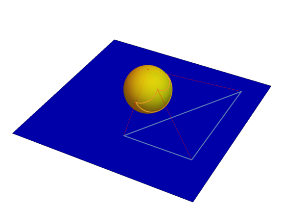

przykład rozdrobnienia grafu do \(K_5\)
2020-04-08
Ciągła bijekcja między płaszczyzną a sferą bez jednego punktu.
Tak wygląda rzut stereograficzny trójkąta z płaszczyzny na sferę: 
Grafy planarne są tym samym co grafy „bez przecięć” na sferze
Uwaga: teraz wyraźniej widać dlaczego do regionów (ścian) grafu planarnego dołączamy również tę ścianę nieograniczoną: ona staje się „normalną ścianą” na sferze.
Wielościan o następujących własnościach: 1. jest wypukły 2. każdy wierzchołek jest tego samego rzędu 3. wszystkie ściany (regiony) są przystającymi wielokątami foremnymi.
Przykłady: sześcian, czworościan foremny
Jest pięć brył platońskich.
Oznaczenia: - \(n =\) rząd (każdego) wierzchołka - \(m =\) liczba krawędzi (każdej) ściany - \(F =\) liczb ścian (regionów) - \(E =\) liczba krawędzi - \(V =\) liczba wierzchołków
Mamy: 1. \(n \ge 3, m \ge 3\) 2. \(n \cdot V = 2 \cdot E\) (wzór Eulera) 3. \(m \cdot F = 2 \cdot E\) (każda krawędź jest na brzegu dwóch ścian) 4. \(F - E + V = 2\) (wzór Eulera)
Zatem \[
2 = \frac{2E}{m} - F + \frac{2E}{n} = E\left(\frac{2}{m} - 1 + \frac{2}{n}\right)
\] Z tego mamy \(\frac{2}{m} - 1 + \frac{2}{n} > 0\), zatem \(\frac{2}{m} > \frac{2}{n} \ge \frac{2}{3}\), więc \(m < 6\).
Podobnie mamy \(n < 6\). Zatem \(m,n \in \{3,4,5\}\).
Ograniczyliśmy więc liczbę możliwości do \(9\). Dalej będziemy eliminować niemożliwe przypadki.
Przypadek \(m = 3\):
(ściany są trójkątami)
mamy \(2 = E\left(\frac{2}{3} - 1 + \frac{2}{n}\right)\), czyli \(2 = E\left(\frac{2}{n} - \frac{1}{3}\right)\);
Przypadek \(m = 4\):
(ściany są kwadratami)
Przypadek \(m = 5\):
(ściany są pięciokątami foremnymi)
otrzymamy dwunastościan foremny
platonic solids
Polskie nazwy: czworościan foremny, sześcian, ośmiościan foremny, dwunastościan foremny, dwudziestościan foremny
Rozdrobnieniem grafu \(G\) nazywamy graf, który otrzymuje się z grafu \(G\) przez zamianę jego krawędzi drogą o jednej lub więcej krawędzi.
przykład rozdrobnienia grafu do \(K_5\)
Niech \(G'\) będzie rozdrobnieniem grafu \(G\). Graf \(G\) jest planarny \(\iff\) graf \(G'\) jest planarny.
Graf nie jest planarny \(\iff\) zawiera rozdrobnienie grafu \(K_{3,3}\) \(\lor\) zawiera rozdrobnienie grafu \(K_5\).
Twierdzenie to pokazuje, że \(K_{3,3}\) oraz \(K_5\) są kanonicznymi przykładami grafów nieplanarnych.